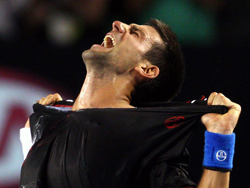
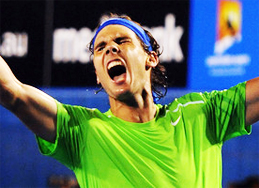
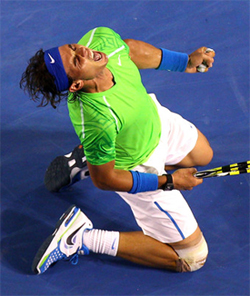
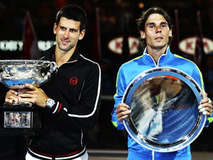
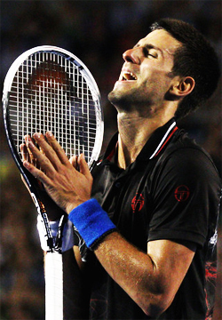

Previous: Strategy TOC | 🏠 Strategy Home | Next: Swinging Volleys - the New Future of Attacking Tennis
Suffering and Service Returns: Novak and Rafa and the 2012 Aussie Final
Comprehensive unified tennis knowledge base — Fundamentals, Stroke Analysis, Reference Library, and more
Suffering and Service Returns:Novak and Rafa and the 2012Aussie Final
Craig O'Shannessy


Novak and Rafa: one of the best battles in planet history?
It was the stuff of legends. The tennis world had its breath taken away in the 2012 Australian Open men's singles final as Novak Djokovic and Rafael Nadal engaged in one of the best battles ever seen in any sporting arena on the planet.
Let's look at this remarkable match from two sides - the emotional and the statistical. Both have a lot to teach us about tennis matches and what it takes to win them.
Suffering
Two great fighters fought like they had never fought before, searching inside for new reserves of courage and determination. Was this what it was like in the Roman Republic to watch gladiators look each other in the eye and fight until there was only one man standing?

The message: you win in sports when you don't give up.
If there is one word that described what happened in this match it's pain. Novak and Rafa pushed each other to break through previous mental and emotional boundaries. Eventually they reached a place where the pain was actually welcomed and enjoyed, a place they had been searching for their entire lives even if they only realized it in the moment.
The message for any tennis player is this. You win in sport when you don't give up – not when you come out ahead in the score.
The match was a shining example of how sport can shape us as players and people. Refusal to submit is the great lesson and the great prize.
Nadal's post match interview was almost shockingly relaxed, upbeat, and free from disappointment. It showed how a player can be positive after spilling everything on the court and still finishing behind on the scoreboard.
'I think we played a great tennis match,' he said. 'Physically was the toughest match I ever played,' Nadal said. 'I wanted to win but I am happy with how I did. I am very happy about my mentality tonight.'
'Something I really enjoy, and I always said is good is to suffer. Enjoy suffering, no?' Nadal said.
'So, when you are fit, when you are, you know, with passion for the game, when you are ready to compete, you are able to suffer and enjoy suffering, no?'

Emotionally there wasn't a loser.
'I don't know if I express very well, but it is something that maybe you understand,' Nadal continued.
'So today I had this feeling, and it is a really good one. I enjoyed. I suffered during the match, but I enjoyed all the troubles that I had during the match.'
'I tried to be there, to find solutions all the time. I played with my heart. I played with my mind.'
Novak
In Novak's press conference, the first question was this: 'Is this the greatest win of your life?'
Without realizing it, the writer was asking Novak to reassess the dream that had driven him as a young player, to win Wimbledon, the greatest tournament in the world in his young eyes.
The question forced him to compare the fulfillment of his dream of finally winning there with the match that had just consumed the last 6 hours of his life. Djokovic paused, looked down, then answered yes.
'I'm a professional tennis player,' he said. I'm sure any other colleague tennis player would say the same: We live for these matches.'

Like Nadal Novak loved the suffering.
'We work every day. We're trying to dedicate all our life to this sport to come to the situation where we play a six hour match for a Grand Slam title.'
The reason he chose this win over his boyhood dream? Because this one took more pain and suffering. This was his defining moment. By choosing adversity over a trophy he showed himself that it's not what you win that's important - it's what you must overcome that matters more.
Asked about Nadal's comments on the joys of suffering, Novak said this: 'I absolutely agree with him.'
'I think I maybe had a similar feeling in couple of matches, but nothing like this.'
'You're going through so much suffering your toes are bleeding. Everything is just outrageous, you know, but you're still enjoying that pain.'
Return of Serve
If there was not an emotional loser in this historic match, how was the outcome determined? The answer is return of serve.
Djokovic's victory resulted from one of the best return or serve performances ever seen on a tennis court. Although the serve is widely considered the most important shot in tennis, in this match Novak made a case for the equal or greater importance of the return.
One of the greatest return of serve matches ever seen?
In his press conference, Nadal stated that he had never played a match where he felt so much pressure from the return.
'Is something unbelievable how he returns,' he said. 'I never played against a player who's able to return like this.'
'His return probably is one of the best in history.'
It's important to note that Nadal did not have a bad serving day. He made 67% of his first serves. He also mixed his service directions well, hitting 39 wide serves, 41 serves to the body and 57 serves to the T.
But that wasn't good enough against Novak. Djokovic was able to win 83 return points, leading to 20 break points and to 7 breaks.
How big was the difference compared to Nadal's return? Nadal won a total of only 56 return points. So Novak won a third more. That was obviously huge.
Nadal had only 6 break points - less than a third of Novak's total These differences are critical in understanding the difference in the match.
Djokovic's down the middle returns put him in charge.
The return is the best chance to rush the server, as it takes slightly longer to recover and prepare for the next shot coming out of the service motion. Djokovic's aggressive returns brought immediate pressure to Nadal.
Djokovic crushed return after return deep down the middle of the court, targeting Nadal's body and taking away valuable fractions of seconds. Nadal would serve and find himself on his back foot defensively hitting the first groundstroke.
Novak: standing in, returning early, attacking with the feet and racket.
Novak did this by standing in, taking the return early, and attacking with his feet and his racket, keeping his swings very compact. He was consistently around or even inside the baseline, especially on second serves.The result was a huge advantage in court position in Rafa's service games.
Dominating the Baseline
Overall, Djokovic dominated the baseline rallies. He hit 36 groundstroke winners, with 28 coming from the forehand side. His forehand winners alone were more than Nadal's total winners.
In the critical third set, Djokovic which dominated 6-2, he was inside the baseline on over a third of all groundstrokes. This was a monumental difference compared to Nadal who was inside the baseline only 4 percent of the time.
In the third set Nadal hit only two winners, won only two return points, and had only one net approach. All this stemmed from the differences in court position.
Compared to Djokovic, Nadal was extremely far back on his returns, especially in the deuce court. Djokovic exploited this by hitting 25 wide first serves, winning 80 percent of those points.
Interestingly, however, Djokovic only won 52 percent of the points on first serves down the 'T.' If Nadal had taken away the wide angle to his backhand on the return, he might have found the necessary points to win the match there alone.
Novak forehand winners exceeded Nadal's total.
The Net
Another major advantage that flowed from aggressive returns was Djokovic's ability to finish points at the net. Djokovic won 28 of 36 points (77 percent) points when he came forward on short balls, including his approach shots as well drop shots from Nadal. Djokovic was also relentless approaching on Nadal's backhand, coming in 24 times on that side and converting over 80%.
Interestingly Nadal also did extremely well coming forward on short balls, coming in 24 time and winning almost 80% of those points. If he had come in more that might have been another way he could have reversed the outcome. But playing so far behind the baseline on the return and in the rallies made this transition difficult or impossible.
Lessons for Rafa?
Remember that Nadal got to within six points of victory in the fifth set, but he still needed to find those six points somewhere. Nadal can play his typical game and win against everybody on the planet except one man.
To change, he must step into returns more and look to pounce on all short balls and to finish at the net. Those answers may sound simple, but they would require the courage to make a major move out of his natural comfort zone.
Craig O'Shannessy is widely recognized as the world leader in analyzing tennis statistics, tennis strategy, and applying his insights in coaching. His research has uncovered the real magic numbers in winning tennis across all levels of the game. He writes for the ATP Tour website and the New York Times among others elite publications.
He has coached on the tour for 20 years working with players including Kevin Anderson, Amer Delic, and Rajeev Ram. His website Brain Game Tennis offers detailed analysis and training programs based on his research that have helped thousands of players around the world.

Click Here to visit Craig's site and check out his amazing training products!
Source: tennisplayer.net archive — Suffering and Service Returns.docx (John Yandell teaching library, 2002-2022). Extracted and rendered as HTML for Tennis Future Lab.